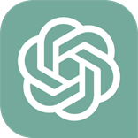
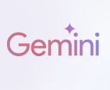
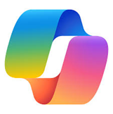
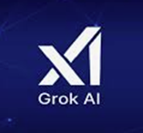

AIの種類と主要サービス
2026年版 — 中小企業経営者のための生成AIサービスガイド
最終更新: 2026年3月7日
生成AIの4つの分類 (AI Categories)
テキスト生成AI
文章の作成・要約・翻訳・分析。ビジネス文書やメール、企画書の作成を支援
画像生成AI
テキストからイラスト・写真風画像を自動生成。プレゼン資料や広告素材の作成に
マルチモーダルAI
テキスト・画像・音声・動画を統合的に処理。写真の分析や音声翻訳まで対応
エージェント型AI
指示を受けて自律的にタスクを計画・実行。複数のステップを自動で連続処理
主要サービス比較一覧 (Quick Comparison)
| サービス | 開発元 | 分類 | 無料 | 有料（月額） | 強み |
|---|---|---|---|---|---|
 ChatGPT |
OpenAI | 汎用 | あり | $8〜$200 | 圧倒的知名度、数学・科学で最強 |
 Gemini |
汎用 | あり | $19.99〜$249.99 | Google連携、画像・動画・音楽まで対応 | |
| Claude | Anthropic | 汎用 | あり | $20〜$200 | 長文処理、安全性、Office連携 |
 Copilot |
Microsoft | 汎用 | あり | ¥4,497〜 | Office統合、法人向けガバナンス |
 Grok |
xAI | 汎用 | あり | $30〜$300 | X（旧Twitter）リアルタイム連携 |
| DeepSeek | DeepSeek（中国） | 汎用 | あり | 従量制 | 低コスト、オープンソース |
| Cursor | Anysphere | 開発特化 | あり | $20〜$200 | AIコーディング、エージェント型開発 |
 Antigravity Antigravity |
開発特化 | あり | 未定 | エージェント型IDE、個人無料 | |
| Perplexity | Perplexity AI | 検索特化 | あり | $20 | 出典付き回答、ファクトチェックに最適 |
※価格は2026年3月時点。為替や改定により変動する場合があります。
各サービスの詳細 (Service Details)
ChatGPT
汎用型OpenAIが開発する世界最大のAIチャットサービス。週間アクティブユーザー約9億人、市場シェア約68%を誇る圧倒的なブランド力。
- GPT-5.4が最新フロンティアモデル。100万トークンのコンテキスト対応
- 数学・科学で世界最高性能 — AIME 2025で史上初の満点
- ChatGPT AgentでWeb操作・リサーチ・資料作成を自動連続実行
- Go（$8/月）プランの新設で学生・個人にも手が届きやすく
Gemini
汎用型Googleが開発する汎用AI。画像・動画・音楽・音声・リサーチ・アプリ開発まで、自社AIでカバーする唯一のプラットフォーム。
- Gemini 3.1 Proが最新。推論力はARC-AGI-2スコア77.1%
- Nano Banana Pro：4K解像度のAI画像生成。資料の図版作成に
- Deep Research：論文レベルの調査レポートを自動生成
- Google検索・Gmail・カレンダーとネイティブ連携
Claude
汎用型OpenAI元メンバーが創業したAnthropicが開発。長文理解と安全性に強み。Excel・PowerPointの直接操作にも対応。
- Opus 4.6：100万トークンのコンテキスト、エージェントチーム機能
- Cowork & Plugins：Excel/PowerPoint/Slackにネイティブ統合
- PDFをアップロード → PowerPointスライド自動生成
- ゼロデイ脆弱性を500件以上自力で発見（セキュリティ業界に衝撃）
Copilot
汎用型MicrosoftがOpenAI技術をベースに開発。すでにWordやExcelを使っている企業にとって最も導入ハードルが低い選択肢。
- エージェントモード：Word/Excel/PPT内で複数ステップを自律実行
- Teams録画 → 議事録 → ToDo → フォローアップメールまで自動連続処理
- Edge・Windowsから直接利用可能。追加インストール不要
- 管理者向けのガバナンス・セキュリティ機能が充実
Grok
汎用型Elon Musk率いるxAIが開発。X（旧Twitter）のリアルタイムデータとの直結が最大の強み。
- Grok 4.20 Beta 2：4エージェント並列議論 / DeepSearch搭載
- X上で
@GrokとメンションするだけでAIが返答 - 動画生成（Grok Imagine 1.0）で10秒・720p動画を生成可能
- マーケティングやトレンド調査に強い
DeepSeek
汎用型（オープン）中国の量化ファンド系企業が開発。低コストながら高性能なオープンソースモデルで世界を震撼させた。
- V3.2-Speciale：数学オリンピック金メダル級の推論力
- オープンソースでAzure・Google Cloud経由で安全に利用可能
- V4（マルチモーダル）が2026年3月リリース予定
- 本家Webサービスは中国サーバー経由。業務データの入力は厳禁
Cursor
開発特化Anysphere（評価額約4.3兆円）が開発するAIコードエディタ。ARR $2Bを突破し、3ヶ月で倍増する驚異的な成長。
- Cursor 2.0：独自Composerモデル搭載。エージェント中心のUI
- カカクコム（価格.com）が全エンジニア約500名に導入
- 日本語で指示するだけでプログラムが完成する時代に
- 非エンジニアでも業務ツールを自作できる可能性
Antigravity
開発特化GoogleのAI開発プラットフォーム。Cursorが「一緒に書く」なら、Antigravityは「任せて見守る」エージェント型開発。
- エージェント・ファースト：AIが自律的に計画→実行→検証まで
- 複数エージェントを同時に並列管理する「マネージャーサーフェス」
- VS Codeベースで既存の開発者にも馴染みやすい
- 個人ユーザーは無料（パブリックプレビュー中）
Perplexity
検索特化Google出身者が創業したAI検索エンジン。「考える」AIではなく「調べる」AI。出典付きで信頼性の高い回答を返す。
- Deep Research：論文レベルの調査レポートを自動生成（精度トップ）
- Model Council：3つのAIに同時に聞いて最適な回答を選択
- ChatGPT・Claudeの回答の裏取り・ファクトチェックに最適
- Snapchat連携で約10億ユーザーにAI検索を提供
目的別おすすめ (Which AI Should I Use?)
🔰 まず無料で試したい
Gemini — Googleアカウントですぐ開始。
ChatGPT — 最も情報が多く、困ったときの参考事例が豊富。
📝 文書作成・議事録・メール
ChatGPT / Claude — 日本語の文章品質が高い。長文の相談はClaudeが特に得意。
🔍 調べもの・リサーチ
Perplexity — 出典付きで信頼性が高い。Google検索の拡張として使うのが効果的。
💼 Office業務の効率化
Copilot — Word/Excel/PowerPointと統合。追加インストールなしで利用可能。
💻 プログラミング・開発
Cursor — 一緒にコードを書くスタイル。
Antigravity — AIに任せて見守るスタイル。個人無料。
🏢 社内導入を検討
Copilot / ChatGPT Team — セキュリティ・管理機能が充実。データが学習に使われない安心感。
実際に触って学びたい方へ
当事務所では、中小企業向けに実践型AI研修を提供しています。
松竹梅3コースから御社のレベルに合わせてお選びいただけます。